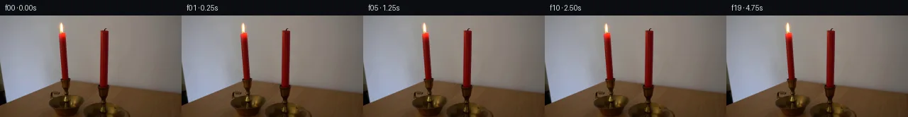

![首帧]()

Round 00
2026-11-05T04:53:01.677051+00:00像素候选变化代码 +193/−0inspection 更新
pixels 7dc939b619fff103 · code 7f20803cd355b77a
查看本轮 generate.py 真实 diff
--- previous/generate.py
+++ current/generate.py
@@ -0,0 +1,193 @@
+#!/usr/bin/env python3
+"""Generate a locked-off 20-frame candle-flame continuation from first_frame.png.
+
+The source image is treated as measured RGB data. The sole moving element is the
+already-present left flame: its source residual is separated from a smooth local
+background estimate, then inverse-warped around a wick-fixed pivot. No image
+reader/viewer, external model, or external asset is used.
+"""
+
+from pathlib import Path
+
+import cv2
+import numpy as np
+from PIL import Image, ImageDraw
+
+from artifact_io import save
+
+
+ROOT = Path(__file__).resolve().parent
+W, H = 256, 144
+ANCHOR_X, ANCHOR_Y = 87.5, 25.0
+
+
+def source_and_flame_residual():
+ """Return source, flame-free local plate, and the extracted flame residual."""
+ source = np.asarray(Image.open(ROOT / "first_frame.png").convert("RGB"), dtype=np.uint8)
+ if source.shape != (H, W, 3):
+ raise ValueError(f"unexpected source shape: {source.shape}")
+
+ # Estimate the neutral wall behind the flame row by row. The reference
+ # bands are well outside the measured luminous shoulder.
+ estimate = source.astype(np.float32).copy()
+ x0, x1 = 76, 99
+ left = source[:, 72:77].astype(np.float32).mean(axis=1)
+ right = source[:, 99:104].astype(np.float32).mean(axis=1)
+ u = np.linspace(0.0, 1.0, x1 - x0 + 1, dtype=np.float32)[None, :, None]
+ strip = left[:, None, :] * (1.0 - u) + right[:, None, :] * u
+ estimate[:, x0 : x1 + 1] = strip
+
+ # The source/background red-channel excess accurately captures both the
+ # white/yellow core and the much softer warm shoulder. Limit the support
+ # to the numerically measured flame envelope and feather it.
+ red_excess = source[:, :, 0].astype(np.float32) - estimate[:, :, 0]
+ raw = np.clip((red_excess - 0.75) / 7.0, 0.0, 1.0)
+ support = np.zeros((H, W), np.float32)
+ support[6:25, 77:98] = 1.0
+ yy, xx = np.mgrid[0:H, 0:W].astype(np.float32)
+ ellipse = ((xx - 87.0) / 11.0) ** 2 + ((yy - 17.0) / 11.5) ** 2
+ support *= np.clip((1.18 - ellipse) / 0.22, 0.0, 1.0)
+ alpha = cv2.GaussianBlur(raw * support, (0, 0), 0.65)
+ alpha = np.clip(alpha, 0.0, 1.0)[..., None]
+
+ clean = source.astype(np.float32) * (1.0 - alpha) + estimate * alpha
+ residual = source.astype(np.float32) - clean
+
+ # Numerically eliminate insignificant far-field values, keeping the warp
+ # confined to the left flame and its immediate optical glow.
+ residual[np.max(np.abs(residual), axis=2) < 0.12] = 0.0
+ return source, clean, residual, alpha[..., 0]
+
+
+def warp_flame(clean, residual, t, sway, height, width, gain):
+ """Inverse-warp a flame residual while fixing the wick attachment."""
+ yy, xx = np.mgrid[0:H, 0:W].astype(np.float32)
+ above = np.clip((ANCHOR_Y - yy) / 16.0, 0.0, 1.35)
+
+ # Increasing displacement toward the tip mimics buoyant flicker. A small
+ # traveling ripple avoids a rigid sprite translation.
+ phase = 0.83 * t
+ ripple = 0.22 * np.sin(phase + above * 4.1) * above
+ bend = sway * np.power(above, 1.55) + ripple
+ map_x = ANCHOR_X + (xx - ANCHOR_X - bend) / width
+ map_y = ANCHOR_Y - (ANCHOR_Y - yy) / height
+
+ moved = cv2.remap(
+ residual,
+ map_x.astype(np.float32),
+ map_y.astype(np.float32),
+ interpolation=cv2.INTER_CUBIC,
+ borderMode=cv2.BORDER_CONSTANT,
+ borderValue=0,
+ )
+
+ # Flame light is additive in the measured source residual. The small gain
+ # modulation is synchronized with extension/contraction, as a real flame's
+ # apparent exposure varies slightly when it stretches.
+ result = clean + moved * gain
… diff truncated; 106 more lines …